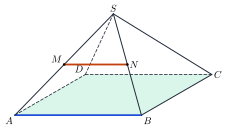
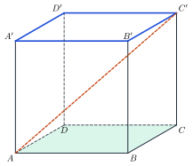
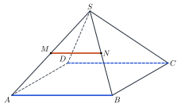
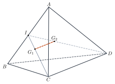
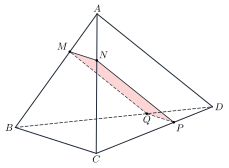
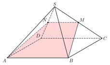

Lines Parallel to PlanesĐường thẳng và mặt phẳng song song
Grade 11 · Topic: Parallelism in SpaceLớp 11 · Chủ đề: Quan hệ song song trong không gian
1Lesson IntroductionGiới thiệu bài học
Learning goalsMục tiêu bài học
By the end of this lesson you can:
Sau bài học này, em có thể:
name the three positions of a line and a plane;
nêu ba vị trí tương đối của đường thẳng và mặt phẳng: đường thẳng song song với mặt phẳng, đường thẳng cắt mặt phẳng, đường thẳng nằm trong mặt phẳng;
prove that a line is parallel to a plane with the criterion;
chứng minh đường thẳng song song với mặt phẳng bằng điều kiện (dấu hiệu nhận biết);
use the properties to find lines of intersection and cross-sections;
dùng tính chất để tìm giao tuyến và thiết diện;
compute lengths in a cross-section with Thales' theorem.
tính độ dài trong thiết diện bằng định lí Thalès.
2Mathematical VocabularyTừ vựng Toán học
a line parallel to a plane – a line and a plane with no common point; we write \(a\parallel(P)\).
đường thẳng song song với mặt phẳng – đường thẳng và mặt phẳng không có điểm chung; kí hiệu \(a\parallel(P)\).
a line cutting a plane – a line and a plane with exactly one common point.
đường thẳng cắt mặt phẳng – đường thẳng và mặt phẳng có đúng một điểm chung.
a line lying in a plane – every point of the line belongs to the plane; \(a\subset(P)\).
đường thẳng nằm trong mặt phẳng – mọi điểm của đường thẳng đều thuộc mặt phẳng; \(a\subset(P)\).
condition (criterion) – a fact that is enough to conclude something.
điều kiện (dấu hiệu nhận biết) – điều đủ để kết luận một tính chất.
Thales' theorem – a line parallel to one side of a triangle cuts the other two sides in equal ratios.
định lí Thalès – đường thẳng song song với một cạnh của tam giác chắn trên hai cạnh kia những đoạn tương ứng tỉ lệ.
trapezoid – a quadrilateral with (at least) one pair of parallel sides.
hình thang – tứ giác có (ít nhất) một cặp cạnh đối song song.
3Useful English PhrasesCụm từ tiếng Anh thường gặp
Prove that the line \(MN\) is parallel to the plane \((ABCD)\).
Chứng minh đường thẳng \(MN\) song song với mặt phẳng \((ABCD)\).
The line lies in the plane.
Đường thẳng nằm trong mặt phẳng.
Find the line of intersection of the two planes.
Tìm giao tuyến của hai mặt phẳng.
Determine the cross-section of the pyramid.
Xác định thiết diện của hình chóp.
The cross-section is a parallelogram.
Thiết diện là hình bình hành.
4Prerequisite ReviewÔn tập kiến thức nền
From Bài 10–11: two planes with a common point meet along a line; two lines are parallel when they lie in one plane and have no common point; a midline of a triangle is parallel to the third side and half of it; if two planes contain two parallel lines and meet, their line of intersection is parallel to both.
Từ Bài 10–11: hai mặt phẳng có một điểm chung thì cắt nhau theo một giao tuyến; hai đường thẳng song song là hai đường thẳng cùng nằm trong một mặt phẳng và không có điểm chung; đường trung bình của tam giác song song với cạnh thứ ba và bằng nửa cạnh đó; hai mặt phẳng cắt nhau lần lượt chứa hai đường thẳng song song thì giao tuyến song song với hai đường thẳng đó.
5TheoryLý thuyết
5.1 Positions of a line and a planeVị trí tương đối của đường thẳng và mặt phẳng
Three cases (by the number of common points)Ba trường hợp (theo số điểm chung)
The line lies in the plane: infinitely many common points, \(a\subset(P)\).
Đường thẳng nằm trong mặt phẳng: vô số điểm chung, \(a\subset(P)\).
The line cuts the plane: exactly one common point, \(a\cap(P)=\{M\}\).
Đường thẳng cắt mặt phẳng: đúng một điểm chung, \(a\cap(P)=\{M\}\).
The line is parallel to the plane: no common point, \(a\parallel(P)\).
Đường thẳng song song với mặt phẳng: không có điểm chung, \(a\parallel(P)\).
5.2 Criterion for a line parallel to a planeĐiều kiện để đường thẳng song song với mặt phẳng
Theorem 1Định lí 1
To prove \(a\parallel(P)\), find a line \(b\) in \((P)\) with \(a\parallel b\), and check that \(a\) is not in \((P)\).
Muốn chứng minh \(a\parallel(P)\), ta tìm một đường thẳng \(b\) nằm trong \((P)\) mà \(a\parallel b\), và kiểm tra \(a\) không nằm trong \((P)\).

5.3 PropertiesTính chất
Theorem 2 and corollariesĐịnh lí 2 và hệ quả
If \(a\parallel(P)\) and a plane \((Q)\) containing \(a\) cuts \((P)\) along \(b\), then \(b\parallel a\).
Nếu \(a\parallel(P)\) và mặt phẳng \((Q)\) chứa \(a\) cắt \((P)\) theo giao tuyến \(b\) thì \(b\parallel a\).
If two intersecting planes are both parallel to a line \(d\), then their line of intersection is parallel to \(d\).
Nếu hai mặt phẳng cắt nhau cùng song song với một đường thẳng \(d\) thì giao tuyến của chúng song song với \(d\).
For two skew lines \(a\), \(b\), there is exactly one plane containing \(a\) and parallel to \(b\).
Cho hai đường thẳng chéo nhau \(a\), \(b\). Có đúng một mặt phẳng chứa \(a\) và song song với \(b\).
How to use Theorem 2 for cross-sectionsDùng Định lí 2 để tìm thiết diện
If the cutting plane \((\alpha)\) is parallel to a line \(d\) and meets a face that contains \(d\) at a point \(M\), then the cut on that face is the line through \(M\) parallel to \(d\).
Nếu mặt phẳng cắt \((\alpha)\) song song với đường thẳng \(d\) và có điểm chung \(M\) với một mặt chứa \(d\), thì giao tuyến trên mặt đó là đường thẳng qua \(M\) song song với \(d\).
Watch out!Lưu ý
\(a\parallel(P)\) does not mean \(a\) is parallel to every line of \((P)\): it can be skew to many of them. Two lines parallel to the same plane may meet or be skew.
\(a\parallel(P)\) không có nghĩa \(a\) song song với mọi đường thẳng của \((P)\): \(a\) có thể chéo nhau với nhiều đường thẳng trong đó. Hai đường thẳng cùng song song với một mặt phẳng có thể cắt nhau hoặc chéo nhau.
6Worked ExamplesVí dụ có lời giải
ExampleVí dụ 1BasicCơ bản – Edges and a face of a cubeCạnh và mặt của hình lập phương
In the cube \(ABCD.A'B'C'D'\), which edges are parallel to the plane \((ABCD)\)? What is the position of \(AC'\) and \((ABCD)\)?
Trong hình lập phương \(ABCD.A'B'C'D'\), những cạnh nào song song với mặt phẳng \((ABCD)\)? Đường thẳng \(AC'\) và \((ABCD)\) có vị trí thế nào?

Analysis: An upper edge is parallel to a lower edge, which lies in \((ABCD)\).
Phân tích: Mỗi cạnh của mặt trên song song với một cạnh của mặt dưới, mà cạnh đó nằm trong \((ABCD)\).
\(A'B'\parallel AB\subset(ABCD)\) and \(A'B'\not\subset(ABCD)\), so \(A'B'\parallel(ABCD)\); similarly \(B'C'\), \(C'D'\), \(D'A'\).
\(A'B'\parallel AB\subset(ABCD)\) và \(A'B'\not\subset(ABCD)\) nên \(A'B'\parallel(ABCD)\); tương tự với \(B'C'\), \(C'D'\), \(D'A'\).
\(A\in AC'\cap(ABCD)\) and \(C'\notin(ABCD)\).
\(A\in AC'\cap(ABCD)\) và \(C'\notin(ABCD)\).
Four edges \(A'B', B'C', C'D', D'A'\); \(AC'\) cuts \((ABCD)\) at \(A\).
Bốn cạnh \(A'B', B'C', C'D', D'A'\); \(AC'\) cắt \((ABCD)\) tại \(A\).
ExampleVí dụ 2BasicCơ bản – A midline in a pyramidĐường trung bình trong hình chóp
\(S.ABCD\) has a parallelogram base; \(M\), \(N\) are the midpoints of \(SA\), \(SB\). Prove that \(MN\parallel(ABCD)\) and \(MN\parallel(SCD)\).
Cho hình chóp \(S.ABCD\) đáy là hình bình hành; \(M\), \(N\) là trung điểm \(SA\), \(SB\). Chứng minh \(MN\parallel(ABCD)\) và \(MN\parallel(SCD)\).

Analysis: Find in each plane a line parallel to \(MN\).
Phân tích: Trong mỗi mặt phẳng, tìm một đường thẳng song song với \(MN\).
\(MN\) is a midline of \(\triangle SAB\): \(MN\parallel AB\). \(AB\subset(ABCD)\), \(MN\not\subset(ABCD)\) so \(MN\parallel(ABCD)\).
\(MN\) là đường trung bình của \(\triangle SAB\): \(MN\parallel AB\). Mà \(AB\subset(ABCD)\), \(MN\not\subset(ABCD)\) nên \(MN\parallel(ABCD)\).
\(AB\parallel CD\) so \(MN\parallel CD\subset(SCD)\); \(M\notin(SCD)\).
\(AB\parallel CD\) nên \(MN\parallel CD\subset(SCD)\); \(M\notin(SCD)\).
\(MN\parallel(ABCD)\) and \(MN\parallel(SCD)\).
\(MN\parallel(ABCD)\) và \(MN\parallel(SCD)\).
ExampleVí dụ 3IntermediateTrung bình – Two centroidsHai trọng tâm
In the tetrahedron \(ABCD\), \(G_1\), \(G_2\) are the centroids of triangles \(ABC\) and \(ABD\). Prove that \(G_1G_2\parallel(BCD)\).
Cho tứ diện \(ABCD\); \(G_1\), \(G_2\) là trọng tâm các tam giác \(ABC\), \(ABD\). Chứng minh \(G_1G_2\parallel(BCD)\).

Analysis: Let \(M\), \(N\) be the midpoints of \(BC\), \(BD\) and use \(\dfrac{AG_1}{AM}=\dfrac{AG_2}{AN}=\dfrac23\).
Phân tích: Gọi \(M\), \(N\) là trung điểm \(BC\), \(BD\) và dùng \(\dfrac{AG_1}{AM}=\dfrac{AG_2}{AN}=\dfrac23\).
In \(\triangle AMN\): \(\dfrac{AG_1}{AM}=\dfrac{AG_2}{AN}\), so \(G_1G_2\parallel MN\) (Thales).
Trong \(\triangle AMN\): \(\dfrac{AG_1}{AM}=\dfrac{AG_2}{AN}\) nên \(G_1G_2\parallel MN\) (Thalès đảo).
\(MN\subset(BCD)\) and \(G_1\notin(BCD)\).
\(MN\subset(BCD)\) và \(G_1\notin(BCD)\).
\(G_1G_2\parallel MN\subset(BCD)\), hence \(G_1G_2\parallel(BCD)\) (and \(G_1G_2=\dfrac23MN=\dfrac13CD\)).
\(G_1G_2\parallel MN\subset(BCD)\) nên \(G_1G_2\parallel(BCD)\) (và \(G_1G_2=\dfrac23MN=\dfrac13CD\)).
ExampleVí dụ 4IntermediateTrung bình – A cross-section parallel to two edgesThiết diện song song với hai cạnh
Tetrahedron \(ABCD\) with \(BC=AD=6\). \(M\in AB\), \(AM=\dfrac13AB\). The plane \((\alpha)\) through \(M\) is parallel to \(BC\) and \(AD\). Find the cross-section and its perimeter.
Cho tứ diện \(ABCD\) có \(BC=AD=6\). Điểm \(M\in AB\) với \(AM=\dfrac13AB\). Mặt phẳng \((\alpha)\) qua \(M\), song song với \(BC\) và \(AD\). Xác định thiết diện và tính chu vi.

Analysis: On each face, draw through a known point a line parallel to \(BC\) or \(AD\) (Theorem 2).
Phân tích: Trên mỗi mặt, qua điểm đã biết kẻ đường thẳng song song với \(BC\) hoặc \(AD\) (Định lí 2).
In \((ABC)\): \(MN\parallel BC\), \(N\in AC\). In \((ACD)\): \(NP\parallel AD\), \(P\in CD\). In \((BCD)\): \(PQ\parallel BC\), \(Q\in BD\). Then \(QM\parallel AD\).
Trong \((ABC)\): \(MN\parallel BC\), \(N\in AC\). Trong \((ACD)\): \(NP\parallel AD\), \(P\in CD\). Trong \((BCD)\): \(PQ\parallel BC\), \(Q\in BD\). Khi đó \(QM\parallel AD\).
\(MN\parallel PQ\), \(NP\parallel QM\): \(MNPQ\) is a parallelogram. Thales: \(MN=\dfrac13BC=2\), \(MQ=\dfrac{BM}{BA}AD=\dfrac23\cdot6=4\).
\(MN\parallel PQ\), \(NP\parallel QM\): \(MNPQ\) là hình bình hành. Theo Thalès: \(MN=\dfrac13BC=2\), \(MQ=\dfrac{BM}{BA}AD=\dfrac23\cdot6=4\).
Parallelogram \(MNPQ\), perimeter \(2(2+4)=12\).
Hình bình hành \(MNPQ\), chu vi \(2(2+4)=12\).
ExampleVí dụ 5AdvancedNâng cao – A plane through a base edgeMặt phẳng chứa một cạnh đáy
\(S.ABCD\) has a parallelogram base, \(AB=8\). \(M\) is the midpoint of \(SC\). The plane \((ABM)\) cuts \(SD\) at \(N\). Find \(N\), the shape of the cross-section and \(MN\).
Cho hình chóp \(S.ABCD\) đáy là hình bình hành, \(AB=8\); \(M\) là trung điểm \(SC\). Mặt phẳng \((ABM)\) cắt \(SD\) tại \(N\). Xác định \(N\), hình dạng thiết diện và tính \(MN\).

Analysis: \(AB\parallel CD\subset(SCD)\), so \(AB\parallel(SCD)\). Use Theorem 2 with the plane \((ABM)\) through \(AB\).
Phân tích: \(AB\parallel CD\subset(SCD)\) nên \(AB\parallel(SCD)\). Dùng Định lí 2 cho mặt phẳng \((ABM)\) chứa \(AB\).
\((ABM)\) and \((SCD)\) share \(M\); their line of intersection is the line through \(M\) parallel to \(AB\) (and \(CD\)), meeting \(SD\) at \(N\).
\((ABM)\) và \((SCD)\) có điểm chung \(M\); giao tuyến là đường thẳng qua \(M\) song song với \(AB\) (và \(CD\)), cắt \(SD\) tại \(N\).
\(MN\parallel CD\) and \(M\) is the midpoint of \(SC\), so \(N\) is the midpoint of \(SD\) and \(MN=\dfrac12CD=4\).
\(MN\parallel CD\), \(M\) là trung điểm \(SC\) nên \(N\) là trung điểm \(SD\) và \(MN=\dfrac12CD=4\).
\(N\) is the midpoint of \(SD\); the cross-section \(ABMN\) is a trapezoid (\(MN\parallel AB\), \(MN=4\ne AB\)); \(MN=4\).
\(N\) là trung điểm \(SD\); thiết diện \(ABMN\) là hình thang (\(MN\parallel AB\), \(MN=4\ne AB\)); \(MN=4\).
7PracticeBài tập luyện tập
A. Multiple ChoiceA. Trắc nghiệm nhiều lựa chọn
How many edges of the cube \(ABCD.A'B'C'D'\) are parallel to the plane \((ABCD)\)?
Có bao nhiêu cạnh của hình lập phương \(ABCD.A'B'C'D'\) song song với mặt phẳng \((ABCD)\)?
Answer: a. Parallel edges: not in the plane and parallel to a line in it: 4.
Đáp án a. Cạnh song song: không nằm trong mặt phẳng và song song với một đường thẳng của nó: 4.
Tetrahedron \(ABCD\), \(BC=10\). \(M\in AB\) with \(AM=\dfrac{1}{2}AB\). The plane through \(M\) parallel to \(BC\) cuts \(AC\) at \(N\). Then \(MN=\)…
Tứ diện \(ABCD\) có \(BC=10\). Điểm \(M\in AB\), \(AM=\dfrac{1}{2}AB\). Mặt phẳng qua \(M\) song song với \(BC\) cắt \(AC\) tại \(N\). Khi đó \(MN=\)…
Answer: d. \(MN\parallel BC\) (Theorem 2), Thales: \(MN=\dfrac{1}{2}\cdot10=5\).
Đáp án d. \(MN\parallel BC\) (Định lí 2), Thalès: \(MN=\dfrac{1}{2}\cdot10=5\).
A tent has the shape of a pyramid \(S.ABCD\) with a rectangular floor, \(AB=30\) dm. A straight pole \(MN\) joins \(M\in SC\) and \(N\in SD\) with \(MN\parallel(ABCD)\) and \(\dfrac{SM}{SC}=\dfrac{1}{2}\). The pole is…
Một chiếc lều có dạng hình chóp \(S.ABCD\), đáy hình chữ nhật, \(AB=30\) dm. Thanh nẹp thẳng \(MN\) nối \(M\in SC\), \(N\in SD\), \(MN\parallel(ABCD)\) và \(\dfrac{SM}{SC}=\dfrac{1}{2}\). Thanh nẹp dài…
Answer: c. \((SCD)\) contains \(MN\) and cuts \((ABCD)\) along \(CD\), so \(MN\parallel CD\); \(MN=\dfrac{1}{2}CD=15\).
Đáp án c. \((SCD)\) chứa \(MN\), cắt \((ABCD)\) theo \(CD\) nên \(MN\parallel CD\); \(MN=\dfrac{1}{2}CD=15\).
B. True or FalseB. Đúng hoặc sai
If \(a\not\subset(P)\) and \(a\parallel b\) with \(b\subset(P)\), then \(a\parallel(P)\).
Nếu \(a\not\subset(P)\) và \(a\parallel b\) với \(b\subset(P)\) thì \(a\parallel(P)\).
Recall Theorem 1, Theorem 2 and the corollary; a line parallel to \((P)\) may be skew to lines of \((P)\).
Nhớ lại Định lí 1, Định lí 2 và hệ quả; đường thẳng song song với \((P)\) có thể chéo nhau với đường thẳng nằm trong \((P)\).
In the cube \(ABCD.A'B'C'D'\), \(A'C'\parallel(ABCD)\).
Trong hình lập phương \(ABCD.A'B'C'D'\), \(A'C'\parallel(ABCD)\).
\(A'C'\parallel AC\subset(ABCD)\).
\(A'C'\parallel AC\subset(ABCD)\).
C. Short AnswerC. Trả lời ngắn
Tetrahedron \(ABCD\), \(BC=8\), \(AD=6\). \(M\in AB\), \(AM=\dfrac{1}{2}AB\). The plane through \(M\) parallel to \(BC\) and \(AD\) cuts the tetrahedron in a parallelogram. Find its perimeter.
Tứ diện \(ABCD\) có \(BC=8\), \(AD=6\). Điểm \(M\in AB\), \(AM=\dfrac{1}{2}AB\). Mặt phẳng qua \(M\) song song với \(BC\) và \(AD\) cắt tứ diện theo một hình bình hành. Tính chu vi hình bình hành đó.
Enter a number.
Nhập một số.
\(MN=\dfrac{1}{2}BC=4\), \(MQ=\dfrac{1}{2}AD=3\); perimeter \(=14\).
\(MN=\dfrac{1}{2}BC=4\), \(MQ=\dfrac{1}{2}AD=3\); chu vi \(=14\).
How many lines containing an edge of the cube \(ABCD.A'B'C'D'\) cut the plane \((ABB'A')\) (exactly one common point)?
Có bao nhiêu đường thẳng chứa cạnh của hình lập phương \(ABCD.A'B'C'D'\) cắt mặt phẳng \((ABB'A')\) (có đúng một điểm chung)?
Enter a number.
Nhập một số.
4 edges are parallel, 4 lie in the plane, the other 4 cut it.
4 cạnh song song, 4 cạnh nằm trong mặt phẳng, 4 cạnh còn lại cắt mặt phẳng.
A. Multiple ChoiceA. Trắc nghiệm nhiều lựa chọn
How many edges of the triangular prism \(ABC.A'B'C'\) are parallel to the plane \((ABB'A')\)?
Có bao nhiêu cạnh của hình lăng trụ tam giác \(ABC.A'B'C'\) song song với mặt phẳng \((ABB'A')\)?
Answer: a. Parallel edges: not in the plane and parallel to a line in it: 1.
Đáp án a. Cạnh song song: không nằm trong mặt phẳng và song song với một đường thẳng của nó: 1.
Tetrahedron \(ABCD\), \(BC=12\). \(M\in AB\) with \(AM=\dfrac{2}{3}AB\). The plane through \(M\) parallel to \(BC\) cuts \(AC\) at \(N\). Then \(MN=\)…
Tứ diện \(ABCD\) có \(BC=12\). Điểm \(M\in AB\), \(AM=\dfrac{2}{3}AB\). Mặt phẳng qua \(M\) song song với \(BC\) cắt \(AC\) tại \(N\). Khi đó \(MN=\)…
Answer: d. \(MN\parallel BC\) (Theorem 2), Thales: \(MN=\dfrac{2}{3}\cdot12=8\).
Đáp án d. \(MN\parallel BC\) (Định lí 2), Thalès: \(MN=\dfrac{2}{3}\cdot12=8\).
A tent has the shape of a pyramid \(S.ABCD\) with a rectangular floor, \(AB=25\) dm. A straight pole \(MN\) joins \(M\in SC\) and \(N\in SD\) with \(MN\parallel(ABCD)\) and \(\dfrac{SM}{SC}=\dfrac{2}{5}\). The pole is…
Một chiếc lều có dạng hình chóp \(S.ABCD\), đáy hình chữ nhật, \(AB=25\) dm. Thanh nẹp thẳng \(MN\) nối \(M\in SC\), \(N\in SD\), \(MN\parallel(ABCD)\) và \(\dfrac{SM}{SC}=\dfrac{2}{5}\). Thanh nẹp dài…
Answer: c. \((SCD)\) contains \(MN\) and cuts \((ABCD)\) along \(CD\), so \(MN\parallel CD\); \(MN=\dfrac{2}{5}CD=10\).
Đáp án c. \((SCD)\) chứa \(MN\), cắt \((ABCD)\) theo \(CD\) nên \(MN\parallel CD\); \(MN=\dfrac{2}{5}CD=10\).
B. True or FalseB. Đúng hoặc sai
If \(a\parallel(P)\), then \(a\) is parallel to every line in \((P)\).
Nếu \(a\parallel(P)\) thì \(a\) song song với mọi đường thẳng nằm trong \((P)\).
Recall Theorem 1, Theorem 2 and the corollary; a line parallel to \((P)\) may be skew to lines of \((P)\).
Nhớ lại Định lí 1, Định lí 2 và hệ quả; đường thẳng song song với \((P)\) có thể chéo nhau với đường thẳng nằm trong \((P)\).
In the cube \(ABCD.A'B'C'D'\), \(AC'\parallel(A'B'C'D')\).
Trong hình lập phương \(ABCD.A'B'C'D'\), \(AC'\parallel(A'B'C'D')\).
\(AC'\) meets \((A'B'C'D')\) at \(C'\).
\(AC'\) cắt \((A'B'C'D')\) tại \(C'\).
C. Short AnswerC. Trả lời ngắn
Tetrahedron \(ABCD\), \(BC=9\), \(AD=12\). \(M\in AB\), \(AM=\dfrac{1}{3}AB\). The plane through \(M\) parallel to \(BC\) and \(AD\) cuts the tetrahedron in a parallelogram. Find its perimeter.
Tứ diện \(ABCD\) có \(BC=9\), \(AD=12\). Điểm \(M\in AB\), \(AM=\dfrac{1}{3}AB\). Mặt phẳng qua \(M\) song song với \(BC\) và \(AD\) cắt tứ diện theo một hình bình hành. Tính chu vi hình bình hành đó.
Enter a number.
Nhập một số.
\(MN=\dfrac{1}{3}BC=3\), \(MQ=\dfrac{2}{3}AD=8\); perimeter \(=22\).
\(MN=\dfrac{1}{3}BC=3\), \(MQ=\dfrac{2}{3}AD=8\); chu vi \(=22\).
How many lines containing an edge of the pyramid \(S.ABCD\) with a square base cut the plane \((SAC)\) (exactly one common point)?
Có bao nhiêu đường thẳng chứa cạnh của hình chóp \(S.ABCD\) có đáy là hình vuông cắt mặt phẳng \((SAC)\) (có đúng một điểm chung)?
Enter a number.
Nhập một số.
0 edges are parallel, 2 lie in the plane, the other 6 cut it.
0 cạnh song song, 2 cạnh nằm trong mặt phẳng, 6 cạnh còn lại cắt mặt phẳng.
A. Multiple ChoiceA. Trắc nghiệm nhiều lựa chọn
How many edges of the cube \(ABCD.A'B'C'D'\) are parallel to the plane \((ACC'A')\)?
Có bao nhiêu cạnh của hình lập phương \(ABCD.A'B'C'D'\) song song với mặt phẳng \((ACC'A')\)?
Answer: a. Parallel edges: not in the plane and parallel to a line in it: 2.
Đáp án a. Cạnh song song: không nằm trong mặt phẳng và song song với một đường thẳng của nó: 2.
Tetrahedron \(ABCD\), \(BC=16\). \(M\in AB\) with \(AM=\dfrac{3}{4}AB\). The plane through \(M\) parallel to \(BC\) cuts \(AC\) at \(N\). Then \(MN=\)…
Tứ diện \(ABCD\) có \(BC=16\). Điểm \(M\in AB\), \(AM=\dfrac{3}{4}AB\). Mặt phẳng qua \(M\) song song với \(BC\) cắt \(AC\) tại \(N\). Khi đó \(MN=\)…
Answer: a. \(MN\parallel BC\) (Theorem 2), Thales: \(MN=\dfrac{3}{4}\cdot16=12\).
Đáp án a. \(MN\parallel BC\) (Định lí 2), Thalès: \(MN=\dfrac{3}{4}\cdot16=12\).
A tent has the shape of a pyramid \(S.ABCD\) with a rectangular floor, \(AB=40\) dm. A straight pole \(MN\) joins \(M\in SC\) and \(N\in SD\) with \(MN\parallel(ABCD)\) and \(\dfrac{SM}{SC}=\dfrac{3}{5}\). The pole is…
Một chiếc lều có dạng hình chóp \(S.ABCD\), đáy hình chữ nhật, \(AB=40\) dm. Thanh nẹp thẳng \(MN\) nối \(M\in SC\), \(N\in SD\), \(MN\parallel(ABCD)\) và \(\dfrac{SM}{SC}=\dfrac{3}{5}\). Thanh nẹp dài…
Answer: c. \((SCD)\) contains \(MN\) and cuts \((ABCD)\) along \(CD\), so \(MN\parallel CD\); \(MN=\dfrac{3}{5}CD=24\).
Đáp án c. \((SCD)\) chứa \(MN\), cắt \((ABCD)\) theo \(CD\) nên \(MN\parallel CD\); \(MN=\dfrac{3}{5}CD=24\).
B. True or FalseB. Đúng hoặc sai
If two lines are parallel to the same plane, then they are parallel.
Hai đường thẳng cùng song song với một mặt phẳng thì song song với nhau.
Recall Theorem 1, Theorem 2 and the corollary; a line parallel to \((P)\) may be skew to lines of \((P)\).
Nhớ lại Định lí 1, Định lí 2 và hệ quả; đường thẳng song song với \((P)\) có thể chéo nhau với đường thẳng nằm trong \((P)\).
In the cube \(ABCD.A'B'C'D'\), \(BD\parallel(CB'D')\).
Trong hình lập phương \(ABCD.A'B'C'D'\), \(BD\parallel(CB'D')\).
\(BD\parallel B'D'\subset(CB'D')\) and \(B\notin(CB'D')\).
\(BD\parallel B'D'\subset(CB'D')\) và \(B\notin(CB'D')\).
C. Short AnswerC. Trả lời ngắn
Tetrahedron \(ABCD\), \(BC=10\), \(AD=15\). \(M\in AB\), \(AM=\dfrac{2}{5}AB\). The plane through \(M\) parallel to \(BC\) and \(AD\) cuts the tetrahedron in a parallelogram. Find its perimeter.
Tứ diện \(ABCD\) có \(BC=10\), \(AD=15\). Điểm \(M\in AB\), \(AM=\dfrac{2}{5}AB\). Mặt phẳng qua \(M\) song song với \(BC\) và \(AD\) cắt tứ diện theo một hình bình hành. Tính chu vi hình bình hành đó.
Enter a number.
Nhập một số.
\(MN=\dfrac{2}{5}BC=4\), \(MQ=\dfrac{3}{5}AD=9\); perimeter \(=26\).
\(MN=\dfrac{2}{5}BC=4\), \(MQ=\dfrac{3}{5}AD=9\); chu vi \(=26\).
How many lines containing an edge of the rectangular box \(ABCD.A'B'C'D'\) cut the plane \((ACC'A')\) (exactly one common point)?
Có bao nhiêu đường thẳng chứa cạnh của hình hộp chữ nhật \(ABCD.A'B'C'D'\) cắt mặt phẳng \((ACC'A')\) (có đúng một điểm chung)?
Enter a number.
Nhập một số.
2 edges are parallel, 2 lie in the plane, the other 8 cut it.
2 cạnh song song, 2 cạnh nằm trong mặt phẳng, 8 cạnh còn lại cắt mặt phẳng.
D. Self-practice: Multiple ChoiceD. Tự luyện: trắc nghiệm
How many edges of the triangular prism \(ABC.A'B'C'\) are parallel to the plane \((BCC'B')\)?
Có bao nhiêu cạnh của hình lăng trụ tam giác \(ABC.A'B'C'\) song song với mặt phẳng \((BCC'B')\)?
Answer: a. An edge is parallel to the plane when it is not in the plane and is parallel to a line in it: 1 edge(s); 4 lie in the plane.
Đáp án a. Cạnh song song với mặt phẳng khi không nằm trong mặt phẳng và song song với một đường thẳng nằm trong nó: 1 cạnh; còn 4 cạnh nằm trong mặt phẳng.
In a tetrahedron, \(M\in AB\) with \(AM=\dfrac{1}{2}AB\). A plane through \(M\) parallel to \(BC\) cuts \(AC\) at \(N\). If \(BC=8\), then \(MN=\)…
Trong một tứ diện, điểm \(M\in AB\) với \(AM=\dfrac{1}{2}AB\). Mặt phẳng qua \(M\) song song với \(BC\) cắt \(AC\) tại \(N\). Nếu \(BC=8\) thì \(MN=\)…
Answer: c. The plane cuts \((ABC)\) along \(MN\parallel BC\); by Thales, \(MN=\dfrac{1}{2}\cdot8=4\).
Đáp án c. Mặt phẳng cắt \((ABC)\) theo \(MN\parallel BC\); theo Thalès, \(MN=\dfrac{1}{2}\cdot8=4\).
Which of the following is correct?
Mệnh đề nào sau đây là đúng?
Answer: a. The false ones: a line parallel to \((P)\) may be skew to lines in \((P)\); two lines parallel to one plane may meet or be skew; \(a\) may lie in \((P)\).
Đáp án a. Các khẳng định sai: đường thẳng song song với \((P)\) có thể chéo nhau với đường thẳng trong \((P)\); hai đường cùng song song với một mặt phẳng có thể cắt nhau hoặc chéo nhau; \(a\) có thể nằm trong \((P)\).
How many lines containing an edge of the pyramid \(S.ABCD\) with a square base meet the plane \((SAB)\) at exactly one point?
Có bao nhiêu đường thẳng chứa cạnh của hình chóp \(S.ABCD\) có đáy là hình vuông cắt mặt phẳng \((SAB)\) (có đúng một điểm chung)?
Answer: d. Edges: 1 parallel, 3 in the plane, 4 cutting it.
Đáp án d. Các cạnh: 1 song song, 3 nằm trong, 4 cắt mặt phẳng.
In S.ABCD, \(M\), \(N\) are the midpoints of \(SA\), \(SB\) and \(AB=10\). Which is correct?
Trong S.ABCD, \(M\), \(N\) là trung điểm của \(SA\), \(SB\) và \(AB=10\). Khẳng định nào đúng?
Answer: d. \(MN\) is a midline: \(MN\parallel AB\), \(MN=\dfrac{10}{2}\); hence \(MN\) is parallel to every plane containing \(AB\) but not \(MN\).
Đáp án d. \(MN\) là đường trung bình: \(MN\parallel AB\), \(MN=\dfrac{10}{2}\); do đó \(MN\) song song với mọi mặt phẳng chứa \(AB\) mà không chứa \(MN\).
A straight LED tube is hung parallel to the floor, \(0.4\) m below the ceiling. The room is \(2.8\) m high (the ceiling is parallel to the floor). How far above the floor is every point of the tube?
Một bóng đèn LED dạng ống thẳng được treo song song với sàn nhà, cách trần \(0{,}4\) m. Phòng cao \(2{,}8\) m (trần song song với sàn). Mọi điểm của bóng đèn cách sàn bao nhiêu mét?
Answer: c. The tube is parallel to the floor, so all its points are at the same height: \(2.8-0.4=2.4\).
Đáp án c. Bóng đèn song song với sàn nên mọi điểm cách sàn như nhau: \(2{,}8-0{,}4=2{,}4\).
How many edges of the cube \(ABCD.A'B'C'D'\) are parallel to the plane \((BCC'B')\)?
Có bao nhiêu cạnh của hình lập phương \(ABCD.A'B'C'D'\) song song với mặt phẳng \((BCC'B')\)?
Answer: c. An edge is parallel to the plane when it is not in the plane and is parallel to a line in it: 4 edge(s); 4 lie in the plane.
Đáp án c. Cạnh song song với mặt phẳng khi không nằm trong mặt phẳng và song song với một đường thẳng nằm trong nó: 4 cạnh; còn 4 cạnh nằm trong mặt phẳng.
In a tetrahedron, \(M\in AB\) with \(AM=\dfrac{1}{3}AB\). A plane through \(M\) parallel to \(BC\) cuts \(AC\) at \(N\). If \(BC=18\), then \(MN=\)…
Trong một tứ diện, điểm \(M\in AB\) với \(AM=\dfrac{1}{3}AB\). Mặt phẳng qua \(M\) song song với \(BC\) cắt \(AC\) tại \(N\). Nếu \(BC=18\) thì \(MN=\)…
Answer: c. The plane cuts \((ABC)\) along \(MN\parallel BC\); by Thales, \(MN=\dfrac{1}{3}\cdot18=6\).
Đáp án c. Mặt phẳng cắt \((ABC)\) theo \(MN\parallel BC\); theo Thalès, \(MN=\dfrac{1}{3}\cdot18=6\).
D. Self-practice: Multiple ChoiceD. Tự luyện: trắc nghiệm
How many edges of the pyramid \(S.ABCD\) with a square base are parallel to the plane \((SAB)\)?
Có bao nhiêu cạnh của hình chóp \(S.ABCD\) có đáy là hình vuông song song với mặt phẳng \((SAB)\)?
Answer: a. An edge is parallel to the plane when it is not in the plane and is parallel to a line in it: 1 edge(s); 3 lie in the plane.
Đáp án a. Cạnh song song với mặt phẳng khi không nằm trong mặt phẳng và song song với một đường thẳng nằm trong nó: 1 cạnh; còn 3 cạnh nằm trong mặt phẳng.
In a tetrahedron, \(M\in SA\) with \(SM=\dfrac{1}{2}SA\). A plane through \(M\) parallel to \(AB\) cuts \(SB\) at \(N\). If \(AB=10\), then \(MN=\)…
Trong một tứ diện, điểm \(M\in SA\) với \(SM=\dfrac{1}{2}SA\). Mặt phẳng qua \(M\) song song với \(AB\) cắt \(SB\) tại \(N\). Nếu \(AB=10\) thì \(MN=\)…
Answer: c. The plane cuts \((SAB)\) along \(MN\parallel AB\); by Thales, \(MN=\dfrac{1}{2}\cdot10=5\).
Đáp án c. Mặt phẳng cắt \((SAB)\) theo \(MN\parallel AB\); theo Thalès, \(MN=\dfrac{1}{2}\cdot10=5\).
Which sentence is always true?
Phát biểu nào sau đây luôn đúng?
Answer: b. The false ones: a line parallel to \((P)\) may be skew to lines in \((P)\); two lines parallel to one plane may meet or be skew; \(a\) may lie in \((P)\).
Đáp án b. Các khẳng định sai: đường thẳng song song với \((P)\) có thể chéo nhau với đường thẳng trong \((P)\); hai đường cùng song song với một mặt phẳng có thể cắt nhau hoặc chéo nhau; \(a\) có thể nằm trong \((P)\).
How many lines containing an edge of the pyramid \(S.ABCD\) with a square base meet the plane \((SAC)\) at exactly one point?
Có bao nhiêu đường thẳng chứa cạnh của hình chóp \(S.ABCD\) có đáy là hình vuông cắt mặt phẳng \((SAC)\) (có đúng một điểm chung)?
Answer: d. Edges: 0 parallel, 2 in the plane, 6 cutting it.
Đáp án d. Các cạnh: 0 song song, 2 nằm trong, 6 cắt mặt phẳng.
In ABCD, \(M\), \(N\) are the midpoints of \(AB\), \(AC\) and \(BC=20\). Which is correct?
Trong ABCD, \(M\), \(N\) là trung điểm của \(AB\), \(AC\) và \(BC=20\). Khẳng định nào đúng?
Answer: a. \(MN\) is a midline: \(MN\parallel BC\), \(MN=\dfrac{20}{2}\); hence \(MN\) is parallel to every plane containing \(BC\) but not \(MN\).
Đáp án a. \(MN\) là đường trung bình: \(MN\parallel BC\), \(MN=\dfrac{20}{2}\); do đó \(MN\) song song với mọi mặt phẳng chứa \(BC\) mà không chứa \(MN\).
A straight LED tube is hung parallel to the floor, \(0.5\) m below the ceiling. The room is \(2.8\) m high (the ceiling is parallel to the floor). How far above the floor is every point of the tube?
Một bóng đèn LED dạng ống thẳng được treo song song với sàn nhà, cách trần \(0{,}5\) m. Phòng cao \(2{,}8\) m (trần song song với sàn). Mọi điểm của bóng đèn cách sàn bao nhiêu mét?
Answer: b. The tube is parallel to the floor, so all its points are at the same height: \(2.8-0.5=2.3\).
Đáp án b. Bóng đèn song song với sàn nên mọi điểm cách sàn như nhau: \(2{,}8-0{,}5=2{,}3\).
How many edges of the triangular prism \(ABC.A'B'C'\) are parallel to the plane \((ABC)\)?
Có bao nhiêu cạnh của hình lăng trụ tam giác \(ABC.A'B'C'\) song song với mặt phẳng \((ABC)\)?
Answer: c. An edge is parallel to the plane when it is not in the plane and is parallel to a line in it: 3 edge(s); 3 lie in the plane.
Đáp án c. Cạnh song song với mặt phẳng khi không nằm trong mặt phẳng và song song với một đường thẳng nằm trong nó: 3 cạnh; còn 3 cạnh nằm trong mặt phẳng.
In a tetrahedron, \(M\in SA\) with \(SM=\dfrac{1}{3}SA\). A plane through \(M\) parallel to \(AB\) cuts \(SB\) at \(N\). If \(AB=9\), then \(MN=\)…
Trong một tứ diện, điểm \(M\in SA\) với \(SM=\dfrac{1}{3}SA\). Mặt phẳng qua \(M\) song song với \(AB\) cắt \(SB\) tại \(N\). Nếu \(AB=9\) thì \(MN=\)…
Answer: a. The plane cuts \((SAB)\) along \(MN\parallel AB\); by Thales, \(MN=\dfrac{1}{3}\cdot9=3\).
Đáp án a. Mặt phẳng cắt \((SAB)\) theo \(MN\parallel AB\); theo Thalès, \(MN=\dfrac{1}{3}\cdot9=3\).
D. Self-practice: Multiple ChoiceD. Tự luyện: trắc nghiệm
How many edges of the cube \(ABCD.A'B'C'D'\) are parallel to the plane \((A'B'C'D')\)?
Có bao nhiêu cạnh của hình lập phương \(ABCD.A'B'C'D'\) song song với mặt phẳng \((A'B'C'D')\)?
Answer: c. An edge is parallel to the plane when it is not in the plane and is parallel to a line in it: 4 edge(s); 4 lie in the plane.
Đáp án c. Cạnh song song với mặt phẳng khi không nằm trong mặt phẳng và song song với một đường thẳng nằm trong nó: 4 cạnh; còn 4 cạnh nằm trong mặt phẳng.
In a tetrahedron, \(M\in SA\) with \(SM=\dfrac{3}{4}SA\). A plane through \(M\) parallel to \(AB\) cuts \(SB\) at \(N\). If \(AB=24\), then \(MN=\)…
Trong một tứ diện, điểm \(M\in SA\) với \(SM=\dfrac{3}{4}SA\). Mặt phẳng qua \(M\) song song với \(AB\) cắt \(SB\) tại \(N\). Nếu \(AB=24\) thì \(MN=\)…
Answer: a. The plane cuts \((SAB)\) along \(MN\parallel AB\); by Thales, \(MN=\dfrac{3}{4}\cdot24=18\).
Đáp án a. Mặt phẳng cắt \((SAB)\) theo \(MN\parallel AB\); theo Thalès, \(MN=\dfrac{3}{4}\cdot24=18\).
Which statement is true?
Khẳng định nào sau đây đúng?
Answer: c. The false ones: a line parallel to \((P)\) may be skew to lines in \((P)\); two lines parallel to one plane may meet or be skew; \(a\) may lie in \((P)\).
Đáp án c. Các khẳng định sai: đường thẳng song song với \((P)\) có thể chéo nhau với đường thẳng trong \((P)\); hai đường cùng song song với một mặt phẳng có thể cắt nhau hoặc chéo nhau; \(a\) có thể nằm trong \((P)\).
How many lines containing an edge of the triangular prism \(ABC.A'B'C'\) meet the plane \((ABC)\) at exactly one point?
Có bao nhiêu đường thẳng chứa cạnh của hình lăng trụ tam giác \(ABC.A'B'C'\) cắt mặt phẳng \((ABC)\) (có đúng một điểm chung)?
Answer: b. Edges: 3 parallel, 3 in the plane, 3 cutting it.
Đáp án b. Các cạnh: 3 song song, 3 nằm trong, 3 cắt mặt phẳng.
In S.ABCD, \(M\), \(N\) are the midpoints of \(SA\), \(SB\) and \(AB=8\). Which is correct?
Trong S.ABCD, \(M\), \(N\) là trung điểm của \(SA\), \(SB\) và \(AB=8\). Khẳng định nào đúng?
Answer: c. \(MN\) is a midline: \(MN\parallel AB\), \(MN=\dfrac{8}{2}\); hence \(MN\) is parallel to every plane containing \(AB\) but not \(MN\).
Đáp án c. \(MN\) là đường trung bình: \(MN\parallel AB\), \(MN=\dfrac{8}{2}\); do đó \(MN\) song song với mọi mặt phẳng chứa \(AB\) mà không chứa \(MN\).
A straight LED tube is hung parallel to the floor, \(0.8\) m below the ceiling. The room is \(3.2\) m high (the ceiling is parallel to the floor). How far above the floor is every point of the tube?
Một bóng đèn LED dạng ống thẳng được treo song song với sàn nhà, cách trần \(0{,}8\) m. Phòng cao \(3{,}2\) m (trần song song với sàn). Mọi điểm của bóng đèn cách sàn bao nhiêu mét?
Answer: c. The tube is parallel to the floor, so all its points are at the same height: \(3.2-0.8=2.4\).
Đáp án c. Bóng đèn song song với sàn nên mọi điểm cách sàn như nhau: \(3{,}2-0{,}8=2{,}4\).
How many edges of the triangular prism \(ABC.A'B'C'\) are parallel to the plane \((A'B'C')\)?
Có bao nhiêu cạnh của hình lăng trụ tam giác \(ABC.A'B'C'\) song song với mặt phẳng \((A'B'C')\)?
Answer: d. An edge is parallel to the plane when it is not in the plane and is parallel to a line in it: 3 edge(s); 3 lie in the plane.
Đáp án d. Cạnh song song với mặt phẳng khi không nằm trong mặt phẳng và song song với một đường thẳng nằm trong nó: 3 cạnh; còn 3 cạnh nằm trong mặt phẳng.
In a tetrahedron, \(M\in DA\) with \(DM=\dfrac{3}{5}DA\). A plane through \(M\) parallel to \(AC\) cuts \(DC\) at \(N\). If \(AC=15\), then \(MN=\)…
Trong một tứ diện, điểm \(M\in DA\) với \(DM=\dfrac{3}{5}DA\). Mặt phẳng qua \(M\) song song với \(AC\) cắt \(DC\) tại \(N\). Nếu \(AC=15\) thì \(MN=\)…
Answer: c. The plane cuts \((DAC)\) along \(MN\parallel AC\); by Thales, \(MN=\dfrac{3}{5}\cdot15=9\).
Đáp án c. Mặt phẳng cắt \((DAC)\) theo \(MN\parallel AC\); theo Thalès, \(MN=\dfrac{3}{5}\cdot15=9\).
8Common MistakesLỗi thường gặp
Forgetting \(a\not\subset(P)\). If \(a\parallel b\subset(P)\), \(a\) may lie in \((P)\); check one point of \(a\) is outside \((P)\).
Quên điều kiện \(a\not\subset(P)\). Nếu \(a\parallel b\subset(P)\) thì \(a\) có thể nằm trong \((P)\); phải chỉ ra một điểm của \(a\) ở ngoài \((P)\).
"Parallel to every line". \(a\parallel(P)\) does not make \(a\) parallel to all lines of \((P)\).
"Song song với mọi đường thẳng". \(a\parallel(P)\) không suy ra \(a\) song song với mọi đường thẳng của \((P)\).
Drawing the cut line freely. On a face containing \(d\parallel(\alpha)\), the cut must be parallel to \(d\).
Vẽ giao tuyến tùy ý. Trên mặt chứa \(d\parallel(\alpha)\), giao tuyến phải song song với \(d\).
Wrong ratio in Thales. \(MN=\dfrac{AM}{AB}BC\) but \(MQ=\dfrac{BM}{BA}AD\): use the vertex of each triangle.
Dùng sai tỉ số Thalès. \(MN=\dfrac{AM}{AB}BC\) nhưng \(MQ=\dfrac{BM}{BA}AD\): tỉ số tính từ đỉnh của từng tam giác.
9Lesson SummaryTổng kết
Line and plane: in it, cutting it (one point), or parallel (no point).
Đường thẳng và mặt phẳng: nằm trong, cắt (một điểm chung) hoặc song song (không có điểm chung).
Criterion: \(a\not\subset(P)\), \(a\parallel b\subset(P)\Rightarrow a\parallel(P)\).
Dấu hiệu: \(a\not\subset(P)\), \(a\parallel b\subset(P)\Rightarrow a\parallel(P)\).
\(a\parallel(P)\), \(a\subset(Q)\), \((Q)\cap(P)=b\Rightarrow b\parallel a\): the key to cross-sections.
\(a\parallel(P)\), \(a\subset(Q)\), \((Q)\cap(P)=b\Rightarrow b\parallel a\): chìa khóa tìm thiết diện.
Key words: parallel to a plane, line of intersection, cross-section.
Từ cần nhớ: parallel to a plane, line of intersection, cross-section.